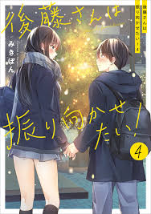

Una historia de romance que nace en la era Meiji. Nacida en una familia noble y bendecida con una bella apariencia, se dice que Satoko tiene poca esperanza de vida. De pronto, su vida es puesta en riesgo porque la persigue un misterioso asesino... con tal de sobrevivir, ¡Satoko le propone matrimonio al asesino! Una señorita y un asesino. ¡Un contrato marital de amor y suspenso entre dos personas que nunca debieron conocerse!
Genero:Romance, Drama, Historia, Samurai, Josei
Autora:Tachibana Oreco
Donde leer:
Tonari no Kaibutsu-Kun
La comedia romántica se centra alrededor de Shizuku Mizutani, una chica a la que solo le preocupan sus estudios y sus planes para el futuro; y un chico llamado Haru Yoshida, que está sentado justo a su lado en clases, pero que no asiste a la escuela debido a una pelea en el primer día de clases. Desde ese entonces, Haru no volvió a asistir ni una sola vez a la escuela debido a que fue suspendido injustamente. Por casualidad, Shizuku es enviada para entregarle unos apuntes, lo que lleva a Yoshida a creer que ella quiere ser su amiga. Este es el inicio de una extraña amistad y romance que florecen entre una fría y calculadora chica y un problemático e inocente chico.
Genero:Romance, Drama, Comedia, Escolar
Autora:Robico
Donde leer:
Yamada Kun to Level 999
Akane, después de ser abandonada por su novio, se hace pasar por novia de Yamada, un jugador de un juego en línea, pero termina desarrollando sentimientos reales por él. ¿Sus sentimientos seran correspondidos?
Genero:Romance, Drama, Comedia, Shoujo, Gamer
Autora:Mashiro
Donde leer:
Gotou-San Wants Me To Look Back
La chica más linda más linda de la escuela, Gotou-san, siempre esta tonteando con Maeda-kun, el chico sentado frente a ella. Ella esta secretamente enamorada de él, pero Maeda-kun, que es inseguro de si mismo, no entiende sus intenciones.

Genero:Romance, Drama, Comedia, Escolar
Estado en: Emisión
Donde leer:
.png)